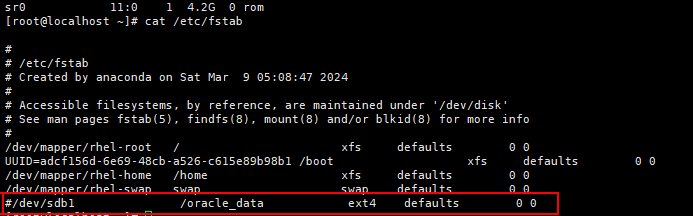
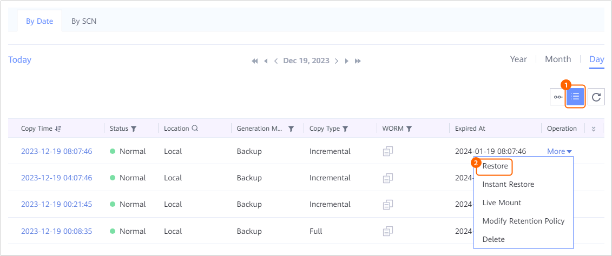
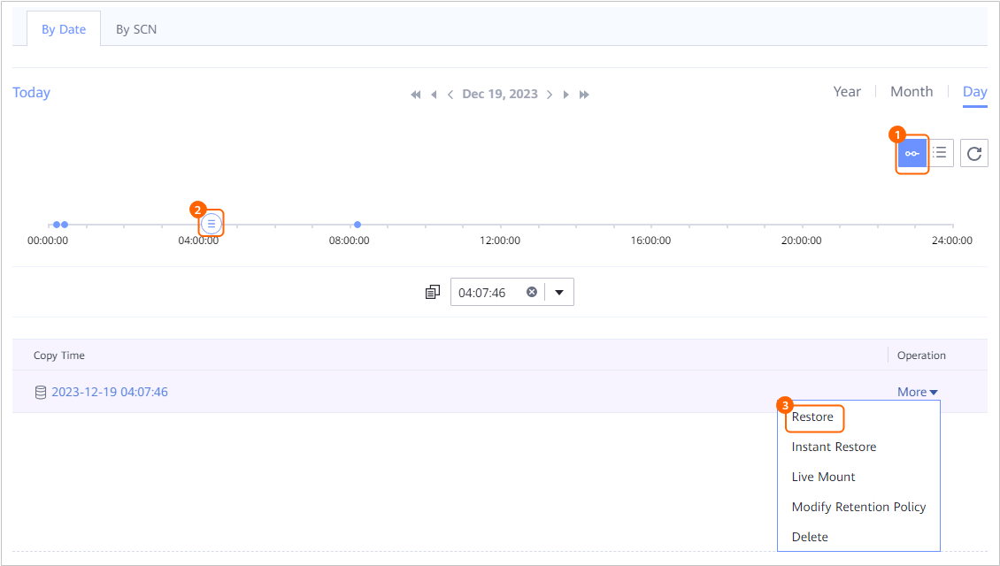

This section describes how to restore a backed-up database to the original location or a new location.
Context
- You can restore an Oracle database by specifying a copy, a point in time, or an SCN.
- Backup copies, replication copies, and imported copies can be used for RMAN-based restoration. Restoration to the original location or a new location is supported. Replication copies cannot be used for restoration to the original location.
- Restored to the original location
An Oracle database is restored to the original host and directory of the database. During the restoration, the original database is overwritten.
- Restored to a new location
An Oracle database is restored to a specified location. If a database with the same name exists at the location, it will be overwritten.
- During the restoration, if a database with the same name exists in the target location, you are advised not to stop the restoration job. Otherwise, the original database will be damaged.
- Restored to the original location
- For 1.6.0 and later versions, when snapshot-based restoration at the storage layer is performed:
- Backup copies, replication copies, and imported copies can be used for restoration in the single-node system scenario.
- Backup copies and imported copies can be used for restoration in the cluster scenario.
- In the Windows cluster scenario, data can only be restored to the original location.
- The system restores LUNs at the specified location. After the restoration, data on the target LUNs will be overwritten.
- If snapshot-based restoration at the storage layer is performed in non-ASM deployment mode, the drive letters to which LUNs are mounted before and after the restoration may be different.
- The GUI may vary with versions.
Prerequisites
- The client and other related software have been installed on the target host for restoration.
For details, see the Client Installation Guide.
- When restoring data to a different host, ensure that the free disk space of the target host is greater than the size of the database.
- For 1.6.0 and later versions, before performing snapshot-based restoration at the storage layer, ensure that:
- The disk where OCR or voting files reside is not on the same LUN as the disk where data files reside.
- The disk where OCR or voting files reside is not on the same LUN as the disk where log files reside.
- The ASM disk group where the database resources to be protected reside does not have other database instances.
Procedure
- During the restoration, if a database with the same name exists in the target location, shut down the database first. Otherwise, the restoration will fail. To shut down the database, do as follows:

The database with the same name at the target location will be overwritten after the restoration.
- Log in to the Oracle database host.
- If the Linux OS is used, use PuTTY to log in to the Oracle database host and run the su - oracle command to switch to user oracle.
- If the Windows OS is used, log in to the Oracle database host as the system administrator.
- Run the following commands to log in to the Oracle database instance.
- OS authentication:
- If the Linux OS is used, run the following commands:
export ORACLE_SID=Database instance name
sqlplus / as sysdba
- If the Windows OS is used, perform the following operations:
- Press Win+R to open the Run window.
- Enter cmd and run the following commands:
set ORACLE_SID=Database instance name
sqlplus / as sysdba
- If the Linux OS is used, run the following commands:
- Database authentication:
- If the Linux OS is used, run the following commands:
export ORACLE_SID=Database instance name
sqlplus
Enter the name of a user with the sysdba permissions as prompted:
username as sysdba
Enter the password as prompted.
- If the Windows OS is used, perform the following operations:
- Press Win+R to open the Run window.
- Enter cmd and run the following commands:
set ORACLE_SID=Database instance name
sqlplus
Enter the name of a user with the sysdba permissions as prompted:
username as sysdba
Enter the password as prompted.
- If the Linux OS is used, run the following commands:
- OS authentication:
- Run the following command to shut down the database with the same name:
shutdown immediate;
For an RAC cluster, run this command on all nodes.
If the following information is displayed, the database is shut down.
ORACLE instance shut down.
- Log in to the Oracle database host.
- For data restoration to the original location, ensure that the size of the free memory of the target host is greater than the total size of the system global area (SGA) and process global area (PGA) of the database. Otherwise, the restoration may fail.
- Check the SGA size and PGA size.
- Log in to the Oracle database. For details, see 1.
- Run the following command to check the SGA size:
The command output similar to the following is displayed. Check the value of sga_target.
SQL> show parameter sga; NAME TYPE VALUE ------------------------------------ --------------------------------- ------------------------------ allow_group_access_to_sga boolean FALSE lock_sga boolean FALSE pre_page_sga boolean TRUE sga_max_size big integer 4768M sga_min_size big integer 0 sga_target big integer 4768M unified_audit_sga_queue_size integer 1048576
- Run the following command to check the PGA size:
The command output similar to the following is displayed. Check the value of pga_aggregate_target.
SQL> show parameter pga; NAME TYPE VALUE ------------------------------------ -------------------------------- ------------------------------ pga_aggregate_limit big integer 3900M pga_aggregate_target big integer 1589M
- Check the free memory size of the host.
- If the Linux OS is used, run the following command as user root to check the free memory size:
free -h
The command output similar to the following is displayed. Check the free memory size.
[root@localhost ~]# free -h total used free shared buff/cache available Mem: 15G 2.2G 992M 4.8G 12G 8.1G Swap: 99G 0B 99G - If the Windows OS is used, perform the following operations:
- Right-click the taskbar of the desktop and choose Task Manager from the shortcut menu.
- Click the Performance tab and click Memory to view the free memory size.
If the free memory size is not greater than the sum of sga_target and pga_aggregate_target values, clear the memory to ensure that the free memory size is greater than the sum of sga_target and pga_aggregate_target values.
- If the Linux OS is used, run the following command as user root to check the free memory size:
- Check the SGA size and PGA size.
- If the Linux OS is used and the target host for recovery is in the high availability cluster server (HACS) cluster, freeze the HACS cluster before the recovery.
You can check whether the target host is in the HACS cluster by referring to Checking Whether the Target Recovery Host Is a Host in the HACS Cluster.
- For 1.6.0 and later versions, perform this step if snapshot-based restoration at the storage layer is required. Otherwise, skip this step.
- For an ASM instance:
- If the Linux OS is used, use PuTTY to log in to the Oracle database host and perform the following operations:
- Shut down the ASM instance or unmount the ASM disk group.
- In a single-node system, run the following commands to shut down the ASM instance:
su - grid srvctl stop asm -force
- In an RAC cluster, run the following commands on all nodes to unmount the ASM disk group where the non-OCR and voting disk data is located. DATA indicates the disk group name.
su - grid
asmcmd
ASMCMD> umount -f DATA
- In a single-node system, run the following commands to shut down the ASM instance:
- For restoration using log copies of the Oracle cluster, perform the following operations. Otherwise, skip this step.
Run the following commands to disable the crs service:
su - grid
cd $ORACLE_HOME/bin
crsctl stop res ora.crsd -init
- Shut down the ASM instance or unmount the ASM disk group.
- If the Windows OS is used, log in to the Oracle database host as the system administrator and perform the following operations:
- Specify the ORACLE_HOME path. Oracle 19c is used as an example.
- Press Win+R to open the Run dialog box. Enter regedit to open the registry and obtain the ORACLE_HOME path from Computer\HKEY_LOCAL_MACHINE\SOFTWARE\ORACLE\KEY_OraGI19Home1.
In the path, KEY_OraGI19Home1 is only an example. Replace it based on actual conditions.
- Press Win+R to open the Run window.
- Enter cmd and press Enter. In the displayed window, run the following command to specify the ORACLE_HOME path:
set ORACLE_HOME=queried ORACLE_HOME path
- Press Win+R to open the Run dialog box. Enter regedit to open the registry and obtain the ORACLE_HOME path from Computer\HKEY_LOCAL_MACHINE\SOFTWARE\ORACLE\KEY_OraGI19Home1.
- Press Win+R, enter cmd, and press Enter. In the Command Prompt, shut down the ASM instance or unmount the ASM disk group by running commands.
- In a single-node system, run the following command to shut down the ASM instance:
srvctl stop asm -force
- In an RAC cluster, run the following commands on all nodes to unmount the ASM disk group where the non-OCR and voting disk data is located. DATA indicates the disk group name.
set ORACLE_SID = ASM instance name
asmcmd
ASMCMD> umount -f DATA
- In a single-node system, run the following command to shut down the ASM instance:
- For restoration using log copies of the Oracle cluster, perform the following operations. Otherwise, skip this step.
Run the following commands to disable the crs service:
crsctl stop res ora.crsd -init
- Specify the ORACLE_HOME path. Oracle 19c is used as an example.
- If the Linux OS is used, use PuTTY to log in to the Oracle database host and perform the following operations:
- For a non-ASM instance:
- Run the following command to check whether effective mounting rules exist in the directories where data, control, and log files, as well as pfile and spfile parameter files are located:
cat /etc/fstab
- If yes, delete the corresponding records or add # before the records.
Example:

- If no, no action is required.
- If yes, delete the corresponding records or add # before the records.
- Run the following command to query the mounting information about the disks where data, control, and log files, as well as pfile and spfile parameter files are located:
- Run the following command to unmount the disks where data, control, and log files, as well as pfile and spfile parameter files are located:
umount -l Disk mounting directory
- Run the following command to check whether effective mounting rules exist in the directories where data, control, and log files, as well as pfile and spfile parameter files are located:
- For an ASM instance:
- Choose Explore > Copy Data > Databases > Oracle.
- You can search for copies by database resource or copy. This section uses database resources as an example.
On the Resources tab page, locate the database to be restored by database name and then click the name.
- Restore data to a specified point in time or using a copy.
You can specify a copy or any point in time between two copies for restoration.
If you need to specify an SCN for restoration, ignore this step and go to 8.- On the By Date tab page, select a year, month, and day in sequence to search for copies.
If
 is displayed under a month or date, copies exist in the month or on the date.
is displayed under a month or date, copies exist in the month or on the date. - Specify a copy or a point in time for restoration.
- Specify a copy for restoration.

- Specify a point in time for restoration.
On the timeline,
 indicates that a copy exists at the time point. If no archive logs are backed up at a point in time, data cannot be restored to the point in time.
indicates that a copy exists at the time point. If no archive logs are backed up at a point in time, data cannot be restored to the point in time.
- For 1.5.0, a maximum of 100 copies can be displayed on the timeline. You can click
 to view all copies.
to view all copies. - During point-in-time restoration, the information about the copy used for restoration cannot be obtained on the management page. Therefore, you cannot view the copy information of the restoration job on pages of the restoration job and related events.
- For 1.5.0, a maximum of 100 copies can be displayed on the timeline. You can click
- Specify a copy for restoration.
- Restore the Oracle database to the original location or a new location.
- Restore the Oracle database to the original location.
- Set Restore To to Original location.
- Set the advanced parameters for restoration.
Table 1 describes the related parameters.
Table 1 Advanced parameters of a restoration job Parameter
Description
BCT
NOTE:This parameter is available only for RMAN-based restoration.
- If you enable the BCT function, the BCT function will be automatically enabled after the restoration is successful.
- If you disable the BCT function, the BCT function will be automatically disabled after the restoration is successful.
Channels
NOTE:This parameter is available only for RMAN-based restoration.
Controls the concurrency of restoration jobs. This parameter specifies the maximum number of connections between RMAN and database instances. If the host performance is average, you are advised to retain the default value. If the host performance is excellent, you can increase the number of channels to improve the concurrency and restoration efficiency. It is recommended that the number of channels be the same as the number of data files.
Value range: 1 to 254.
Clients
NOTE:This parameter is available only when snapshot-based restoration at the storage layer is performed in 1.6.0 and later versions.
Client used for executing the restoration job. You can select multiple clients. If this parameter is not set, the system selects one client by default.NOTE:If the Windows OS is used, select a built-in client or a host where the external Linux client and Oracle plug-in are installed.
Concurrency
NOTE:This parameter is available only when snapshot-based restoration at the storage layer is performed in 1.6.0 and later versions.
Number of restoration sub-jobs that can be executed concurrently. The value ranges from 1 to 8.
Start Database
NOTE:This parameter is available only when RMAN-based restoration is performed in 1.6.0 and later versions.
After this function is enabled, the database is automatically started after the restoration job is complete.
Execution Script
You can execute a user-defined script before restoration, upon restoration success, or upon restoration failure as required.
Script to Run Before Restoration
You can configure Script to Run Before Restoration, Script to Run upon Restoration Success, and Script to Run upon Restoration Failure based on the actual requirements. When a message indicating that the prerequisite task starts to be executed is displayed during a backup job, the configured script will be executed in the corresponding scenario.
- If the Linux OS is used, enter the script name, which ends with .sh. Ensure that the script has been stored in the DataBackup/ProtectClient/ProtectClient-E/sbin/thirdparty directory in the client installation directory and the user (root by default) who has logged in to the database host is permitted to execute the script. If the user has no execution permission, run the following commands in sequence to grant the permission:
chown root:root Script name
chmod 500 Script name
- If the Windows OS is used, enter the script name, which ends with .bat. Ensure that the script has been stored in the DataBackup\ProtectClient\ProtectClient-E\bin\thirdparty directory in the client installation directory and the user (Administrator by default) who has logged in to the database host is permitted to execute the script. If the user has no execution permission, perform the following operations in sequence to grant the permission:
Right-click the script and choose Properties > Security. In the dialog box that is displayed, select the Administrator user and click Edit to change the permission.
NOTE:When Script to Run upon Restoration Success is configured, the status of the restoration job is displayed as Succeeded on the management page even if the script fails to be executed. Check whether the job details contain a message indicating that a post-processing script fails to be executed. If yes, modify the script in a timely manner.
Script to Run upon Restoration Success
Script to Run upon Restoration Failure
- Click OK.
After restoration to the original location is performed, execute a full backup during off-peak hours. Otherwise, the log backup after the point in time for restoration may be unavailable.
- Restore the Oracle database to a new location.
- Set Restore To to New location.
- Set the basic and advanced parameters for restoration.
Table 2 describes the related parameters.
Table 2 Restoration parameters Parameter
Description
TagNOTE:This parameter is available only in 1.6.0 and later versions.
If you set Restore To to New location, you can filter the resources to be restored by tag.
Target Host/Cluster
Target host or cluster to which data is restored.
NOTE:If you want to restore data to a cluster, select a node in the cluster.
Original InstanceNOTE:This parameter is available only when RMAN-based restoration is performed in 1.6.0 and later versions.
Original instance to be restored to the target location.
Target InstanceNOTE:This parameter is available only when RMAN-based restoration is performed in 1.6.0 and later versions.
Name of the instance in the target location for restoration. If you do not set this parameter, the instance name is the same as the original instance name before the restoration.NOTE:If the target instance name is configured, use the target instance name to log in to the database after the restoration.
Target Path
NOTE:This parameter is available only for RMAN-based restoration.
ASM disk group directory or file system directory where the database to be restored is located on the target host.
An example of the ASM disk group directory is +ORADATA, and an example of the file system directory is /u01/oracle/oradata/.
NOTE:- Ensure that the path exists on the target host and the Oracle installation user has the read, write, and execute permissions on the path. (If the Linux OS is used, switch to the Oracle installation user and run the ll command in the parent path to query the permissions. If the Windows OS is used, right-click the path, choose Properties > Security, and find the installation user to view the permissions.) Otherwise, the restoration job will fail. If the target path is empty, ensure that the ASM disk group directory or file system directory that is the same as that of the production database exists on the target host.
- The remaining space of the disk where the target path is located must be greater than the space occupied by the source database. Otherwise, the restoration job will fail.
Target Disk
NOTE:This parameter is available only when snapshot-based restoration at the storage layer is performed in 1.6.0 and later versions.
Select the disk to be restored to the target host.
NOTE:- If the disk to be restored is an ASM disk, select the target disk corresponding to ASM Disk Group Name. For example, if the value of ASM Disk Group Name is data_108, select a disk whose prefix is data as the target disk.
- After snapshot-based restoration at the storage layer is performed, data on the target LUNs will be overwritten. Ensure that the size of the corresponding LUN at the target location is greater than or equal to that of the LUN in the backup copy.
Clients
NOTE:This parameter is available only when snapshot-based restoration at the storage layer is performed in 1.6.0 and later versions.
Client used for executing the restoration job. You can select multiple clients. If this parameter is not set, the system selects one client by default.NOTE:If the Windows OS is used, select a built-in client or a host where the external Linux client and Oracle plug-in are installed.
Concurrency
NOTE:This parameter is available only when snapshot-based restoration at the storage layer is performed in 1.6.0 and later versions.
Number of restoration jobs that can be executed concurrently. The value ranges from 1 to 8.
BCT
NOTE:This parameter is available only for RMAN-based restoration.
- If you enable the BCT function, the BCT function will be automatically enabled after the restoration is successful.
- If you disable the BCT function, the BCT function will be automatically disabled after the restoration is successful.
Channels
NOTE:This parameter is available only for RMAN-based restoration.
Controls the concurrency of restoration jobs. This parameter specifies the maximum number of connections between RMAN and database instances. If the host performance is average, you are advised to retain the default value. If the host performance is excellent, you can increase the number of channels to improve the concurrency and restoration efficiency. It is recommended that the number of channels be the same as the number of data files.
Value range: 1 to 254.
Execution Script
You can execute a user-defined script before restoration, upon restoration success, or upon restoration failure as required.
Script to Run Before Restoration
You can configure Script to Run Before Restoration, Script to Run upon Restoration Success, and Script to Run upon Restoration Failure based on the actual requirements. When a message indicating that the prerequisite task starts to be executed is displayed during a backup job, the configured script will be executed in the corresponding scenario.
- If the Linux OS is used, enter the script name, which ends with .sh. Ensure that the script has been stored in the DataBackup/ProtectClient/ProtectClient-E/sbin/thirdparty directory in the client installation directory and the user (root by default) who has logged in to the database host is permitted to execute the script. If the user has no execution permission, run the following commands in sequence to grant the permission:
chown root:root Script name
chmod 500 Script name
- If the Windows OS is used, enter the script name, which ends with .bat. Ensure that the script has been stored in the DataBackup\ProtectClient\ProtectClient-E\bin\thirdparty directory in the client installation directory and the user (Administrator by default) who has logged in to the database host is permitted to execute the script. If the user has no execution permission, perform the following operations in sequence to grant the permission:
Right-click the script and choose Properties > Security. In the dialog box that is displayed, select the Administrator user and click Edit to change the permission.
NOTE:When Script to Run upon Restoration Success is configured, the status of the restoration job is displayed as Succeeded on the management page even if the script fails to be executed. Check whether the job details contain a message indicating that a post-processing script fails to be executed. If yes, modify the script in a timely manner.
Script to Run upon Restoration Success
Script to Run upon Restoration Failure
Modify Database Settings
NOTE:This parameter is available only for RMAN-based restoration.
Modify the database parameters based on the actual configuration of the target host. If any parameter is set incorrectly, the database may fail to be restored.
NOTE:During restoration, ensure that the free memory size of the target host must be greater than the total size of the SGA and PGA of the database. Otherwise, the restoration may fail.
- Check the free memory size of the target host.
For details, see 2.
- After enabling Modify Database Settings, search for *.pga_aggregate_target and *.sga_target parameters.
Check whether the free memory size is greater than the sum of *.pga_aggregate_target and *.sga_target values.
- If yes, no further action is required.
- If no, go to 3.
- Modify either *.pga_aggregate_target or *.sga_target parameters or both of them to ensure that the free memory size is greater than the sum of *.pga_aggregate_target and *.sga_target values.
If multiple identical parameters are found, modify all of them.
- If *.pga_aggregate_target is modified, change Instance name.__pga_aggregate_target to the following:
Instance name.__pga_aggregate_target = *.pga_aggregate_target * 1024 *1024
If *.sga_target is modified, change Instance name.__sga_target to the following:
Instance name.__sga_target = *.sga_target * 1024 *1024
- Click OK and complete the configuration as prompted.
For 1.6.0 and later versions, if the name of the target database for restoration is the same as that of the original database, scan the restoration target resource after the restoration job is complete to ensure that the obtained instance name information is correct.
- Restore the Oracle database to the original location.
- On the By Date tab page, select a year, month, and day in sequence to search for copies.
- Specify an SCN for restoration.
- On the By SCN tab page, enter an SCN and choose More > Restoration.
Run the following command to obtain the current SCN of the database:
select dbms_flashback.get_system_change_number from dual;
- Select a backup copy for restoration.
All backup copies that contain the specified SCN are displayed. You can determine the SCN to be restored to based on the time when a backup copy is generated.
If no backup copy is displayed, no logs are backed up at the specified SCN and therefore data cannot be restored based on the SCN. In this case, enter another SCN.
- Restore the database to the original location or a new location.
For details, see 7.c.
- On the By SCN tab page, enter an SCN and choose More > Restoration.